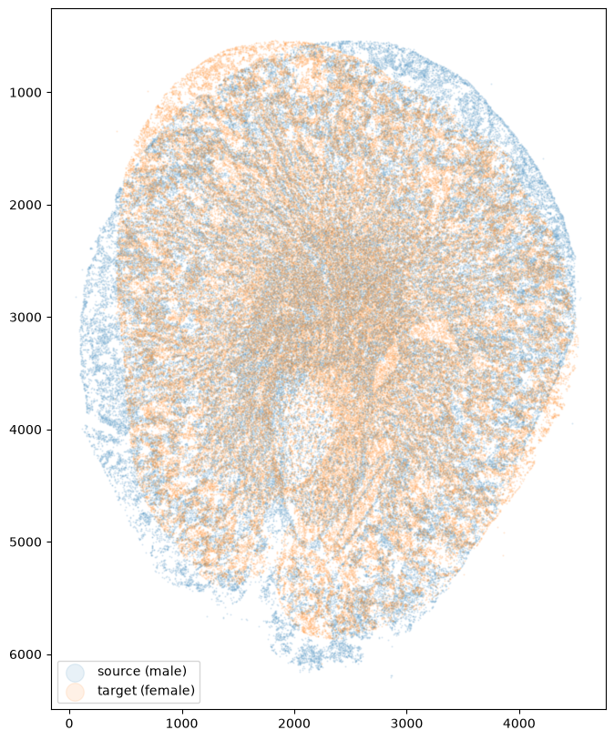
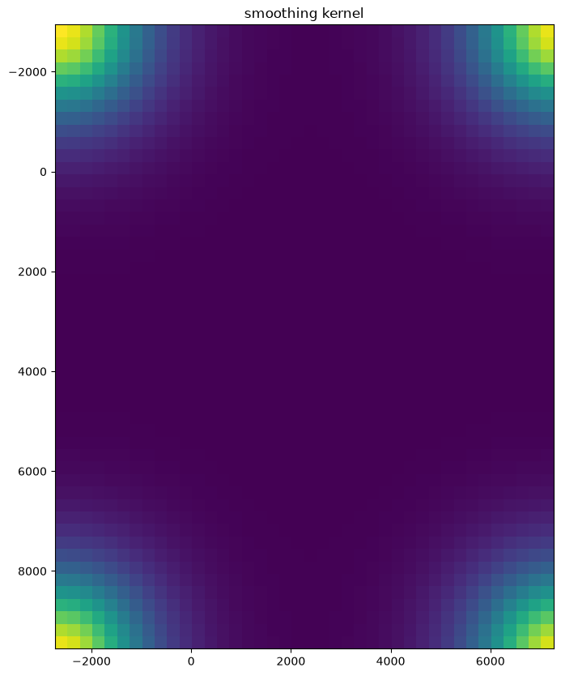
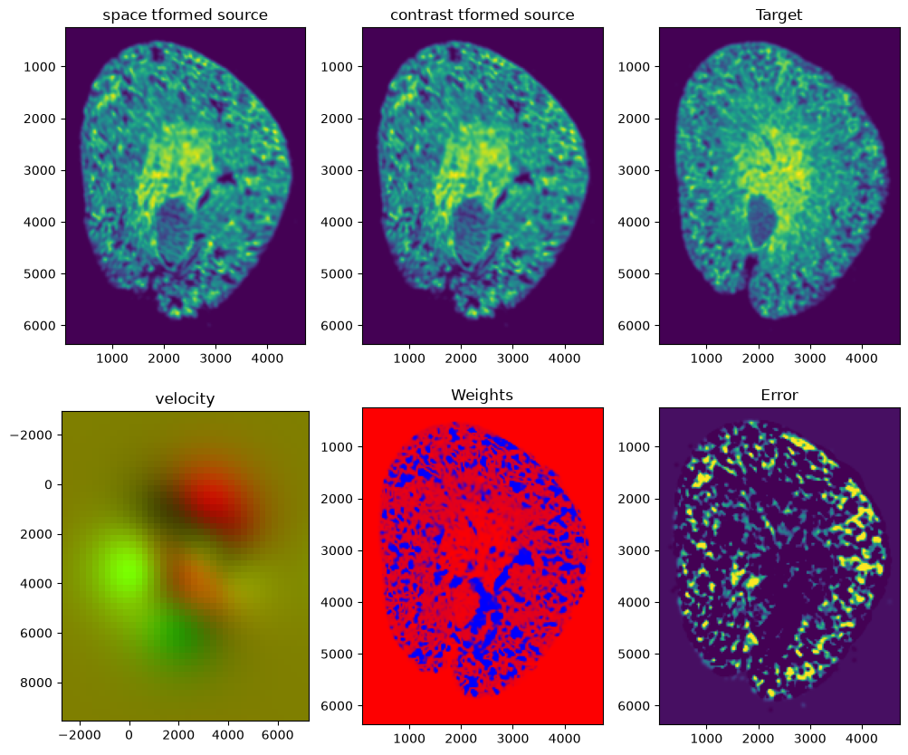
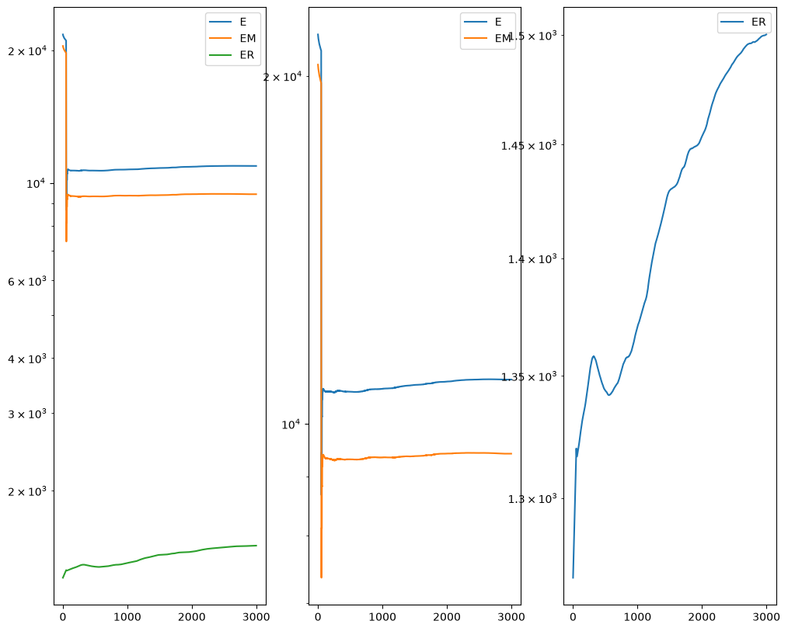
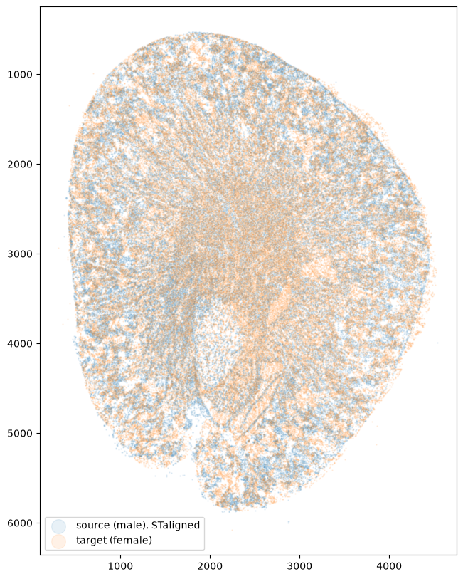

Aligning male and female mouse kidney sections from Cartana
In this notebook, we align two single cell resolution spatial transcriptomics datasets of sham-operated adult mouse kidney sections, assayed by Cartana in situ sequencing and segmented with Baysor from Wu et al: a male section (GSM7090410) as the source and a female section (GSM7090415) as the target.
[1]:
## import dependencies
import numpy as np
import matplotlib.pyplot as plt
import pandas as pd
import STalign
# make plots bigger
plt.rcParams["figure.figsize"] = (12,10)
Read in and format the input
Each dataset is a Baysor segmentation_cell_stats.csv file, which we have compressed and placed in a folder called cartana_data. It has one row per cell, with the cell centroid in the x and y columns.
STalign needs the cell centroids as numpy arrays. Its defaults assume micrometers, while Baysor reports image pixels, so we convert them. The pixel size is not stated in the data release; 0.1625 µm per pixel gives a section of about 4.4 × 5.8 mm, consistent with mouse kidney.
[2]:
# micrometers per image pixel (assumed)
um_per_px = 0.1625
# source (male) and target (female) cells
df1 = pd.read_csv('../cartana_data/GSM7090410_cartana_sham_male_segmentation_cell_stats.csv.gz')
df2 = pd.read_csv('../cartana_data/GSM7090415_cartana_sham_female_segmentation_cell_stats.csv.gz')
print(df1.head())
# cell centroids in um
xI = df1['x'].to_numpy()*um_per_px
yI = df1['y'].to_numpy()*um_per_px
xJ = df2['x'].to_numpy()*um_per_px
yJ = df2['y'].to_numpy()*um_per_px
cell x y cluster n_transcripts density \
0 1 5905.766000 4884.044000 4 5 0.007945
1 2 5086.160000 5708.391250 5 8 0.011020
2 3 5556.215000 5281.355000 6 10 0.005935
3 4 5017.552000 5799.638000 5 10 0.010640
4 5 6035.902857 4798.607143 5 7 0.007109
elongation area avg_confidence
0 5.859 629.3 0.9994
1 1.989 725.7 0.9999
2 2.592 1685.0 1.0000
3 3.218 940.2 1.0000
4 4.155 984.7 0.9992
Both sections already have the papilla pointing down, so no initial rotation is needed. We only move the source cells so that their centroid is on the target’s, which gives the alignment a good starting point.
[3]:
# move the centroid of the source cells onto the centroid of the target cells
xI = xI - xI.mean() + xJ.mean()
yI = yI - yI.mean() + yJ.mean()
Before alignment
Image coordinates have their origin at the top left, so we invert the y axis.
[4]:
fig,ax = plt.subplots()
ax.scatter(xI,yI,s=0.5,alpha=0.1, label='source (male)')
ax.scatter(xJ,yJ,s=0.5,alpha=0.1, label='target (female)')
ax.set_aspect('equal')
ax.invert_yaxis()
ax.legend(markerscale = 20, loc = 'lower left')
[4]:
<matplotlib.legend.Legend at 0x12cd44050>

Alignment and diagnostic plots
align_cells rasterizes both sets of cells into density images and runs LDDMM on them, coarse to fine. Several options differ from the defaults here:
dx=30: rasterize at 30 µm instead of 15 µm. Coarser images are faster to fit and smooth out cell-to-cell variation that does not help a whole-section alignment, while 30 µm still resolves the tissue boundary (50 µm matched the outline of the section less well).levels=((2,1000),(1,3000)): the coarse-to-fine schedule, as (pooling factor, iterations) pairs. We run 1000 iterations on the images pooled to 60 µm, then 3000 at the full 30 µm. The default, ((4,500),(2,500)), would pool 30 µm images to 120 and 60 µm, and 500 iterations is not enough for the energy to level off.mixture=None: the default mixture model allows for tissue missing from the target, but the female section is complete.prefit=False: by defaultLDDMMfirst fits an affine transform from several starting angles. For these sections it picked a 30° start that ended in a stretch of about 30% along one axis, so we start from the centroid shift above instead.
align_cells draws LDDMM’s diagnostic figures for its last, finest level:
the smoothing kernel of the velocity field;
the source deformed onto the target (before and after its intensities are matched to the target’s), the target, the velocity field, the matching weights of the target pixels, and the remaining error, which should show no large structure;
the energy over the iterations:
Eis the total,EMthe image matching term andERthe regularization of the deformation. At iteration 50 the matching weights, which start at 0.5, are first re-estimated, which changes the scale of the energy; after thatEshould level off when the alignment has converged. Here it is flat within about 2% from early in the last level, withERstill rising slowly as the deformation keeps making small adjustments.
[5]:
%%time
out = STalign.align_cells(xI, yI, xJ, yJ, dx=30, levels=((2,1000),(1,3000)),
mixture=None, prefit=False, device='cpu')
CPU times: user 15.7 s, sys: 229 ms, total: 15.9 s
Wall time: 2.73 s



After alignment
We apply the transform to the source cells. STalign uses (row, column) order, so we pass the points as (y, x) and swap them back.
[6]:
tpointsI = STalign.transform_points_source_to_target(out['xv'], out['v'], out['A'], np.stack([yI, xI], 1)).cpu().numpy()
xI_aligned = tpointsI[:,1]
yI_aligned = tpointsI[:,0]
fig,ax = plt.subplots()
ax.scatter(xI_aligned,yI_aligned,s=0.5,alpha=0.1, label='source (male), STaligned')
ax.scatter(xJ,yJ,s=0.5,alpha=0.1, label='target (female)')
ax.set_aspect('equal')
ax.invert_yaxis()
ax.legend(markerscale = 20, loc = 'lower left')
[6]:
<matplotlib.legend.Legend at 0x12f47a9c0>

Write out the results
We append the aligned positions to the original source data, both in the image pixel units of the target, so they can be used in place of its x and y, and in micrometers. We save them as a compressed .csv.gz file.
[7]:
results = df1.assign(aligned_x = xI_aligned/um_per_px,
aligned_y = yI_aligned/um_per_px,
aligned_x_um = xI_aligned,
aligned_y_um = yI_aligned)
results.to_csv('../cartana_data/GSM7090410_cartana_sham_male_STalign_to_GSM7090415_cartana_sham_female_align_cells.csv.gz',
compression='gzip', index=False)
results.head()
[7]:
| cell | x | y | cluster | n_transcripts | density | elongation | area | avg_confidence | aligned_x | aligned_y | aligned_x_um | aligned_y_um | |
|---|---|---|---|---|---|---|---|---|---|---|---|---|---|
| 0 | 1 | 5905.766000 | 4884.044000 | 4 | 5 | 0.007945 | 5.859 | 629.3 | 0.9994 | 5215.722303 | 6257.965821 | 847.554874 | 1016.919446 |
| 1 | 2 | 5086.160000 | 5708.391250 | 5 | 8 | 0.011020 | 1.989 | 725.7 | 0.9999 | 4565.575292 | 7172.918637 | 741.905985 | 1165.599278 |
| 2 | 3 | 5556.215000 | 5281.355000 | 6 | 10 | 0.005935 | 2.592 | 1685.0 | 1.0000 | 4937.389106 | 6690.008583 | 802.325730 | 1087.126395 |
| 3 | 4 | 5017.552000 | 5799.638000 | 5 | 10 | 0.010640 | 3.218 | 940.2 | 1.0000 | 4515.110684 | 7274.851790 | 733.705486 | 1182.163416 |
| 4 | 5 | 6035.902857 | 4798.607143 | 5 | 7 | 0.007109 | 4.155 | 984.7 | 0.9992 | 5323.900946 | 6162.581790 | 865.133904 | 1001.419541 |